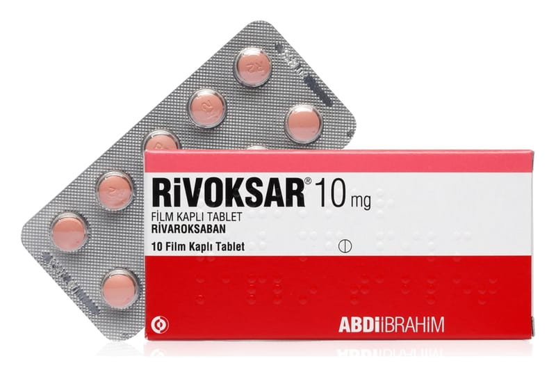

Rivoksar 10 mg Film Kaplı Tablet, 30 Adet

Ne için kullanılır
KT · Bölüm 1• RİVOKSAR film kaplı tabletlerin her biri 10 mg etkin madde (rivaroksaban) içerir. RİVOKSAR laktoz granül (laktoz monohidrat SD) (sığır sütünden elde edilir) içermektedir. Rivaroksaban pıhtılaşmayı önleyici ilaçlar olarak adlandırılan bir ilaç grubuna dahildir ve
etkisini kanın pıhtılaşmasında rol oynayan faktör Xa'yı engelleyerek ve böylece kanın pıhtı oluşturma eğilimini azaltarak gösterir. • RİVOKSAR pembe renkli, yuvarlak, bikonveks, bir yüzü “R2” baskılı diğer yüzü düz film kaplı tablettir, 10 ve 30 tabletlik ambalajlarda sunulmaktadır. • RİVOKSAR yetişkin hastalarda aşağıdaki durumlarda kullanılmaktadır: −RİVOKSAR, bacaklarınızdaki ciddi bir ortopedik ameliyatı sonrası, bacaklarınızdaki damarlarda kan pıhtısı oluşumunu önlemek için kullanılır. Örneğin bu ameliyat kalçanızda ya da dizinizde olabilir. Doktorunuz ameliyat sonrasında kan pıhtılaşma riskiniz yüksek olduğu için bu ilacı size reçete etmiştir. −Bacak damarlarınızdaki kan pıhtısının (derin ven trombozu) tedavisi ve akciğer damarlarınızdaki kan pıhtısının (pulmoner emboli) tedavisi ve bacak ve akciğer damarlarınızdaki kan pıhtısının tekrar oluşmasını önlemek için kullanılmaktadır.